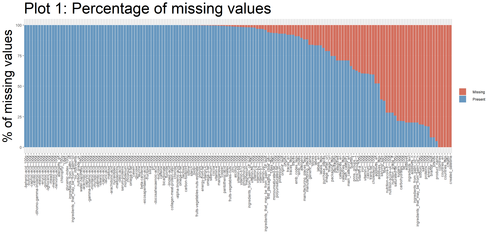
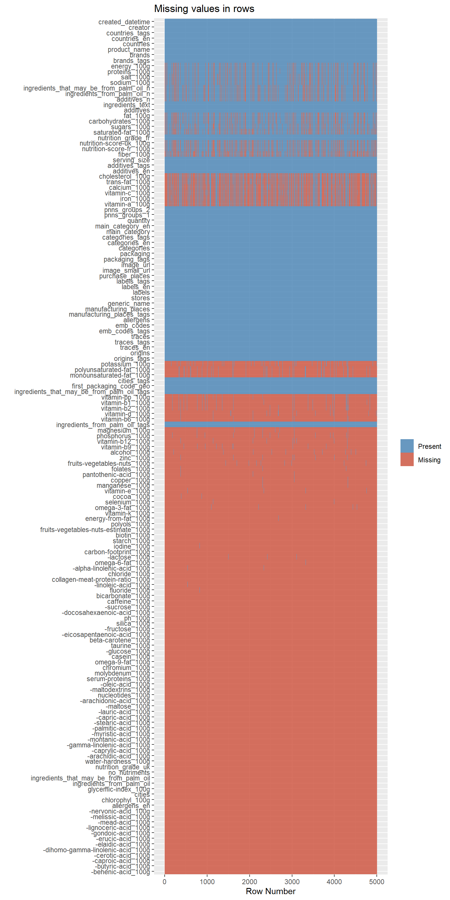

Chapter 4 Missing values
First we get the percentages of missing values per feature, and stored the percentages in variable called missing_values. We found the missing values are either in the form of ‘na’ or blank.
4.1 Graph I.
The first graph shows the percentage of missing values per feature:  We use percentage plot later as a reference to drop features with too many missing values.
4.2 Graph II.
The second graph shows the missing values by variable:  This one is easier to tell row/column missing patterns by observing links between missing values for different features.
4.3 Feature Engineering
We drop all the features which have more than 75% missing values to avoid ending up with misleading results. 77 columns are dropped. We go from 163 columns to 86 columns.